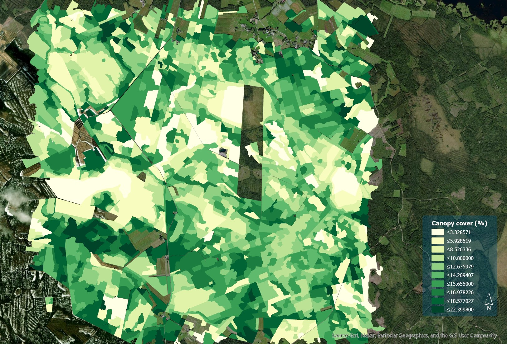

Improving Open Forest Data for Forest Management: A Spatial Data Analysis Project
The Finnish Forest Centre (Metsäkeskus) provides open forest data for forest management and planning. The data consists of stand-level forest information estimated by combining the airborne laser scanning (ALS) features with ground-truth data from field-measured sample plots using the area-based approach. The data is available in GeoPackage format on 16m x 16 m grid cells (hila) from which the attributes have been summarized for the forest compartments (kuvio, the operational forest management units). The open forest data is an essential resource for forest management, but processing it can be time-consuming and requires specialized skills.
As part of an academic project, I was tasked with improving the open forest data for customers by addressing their feedback. The feedback highlighted two main issues: missing forest height variation and canopy cover data for some gridded forest information and operational forest management units that were too small in size. To address these issues, I learned several tools and techniques related to data processing and analysis.
First, I accessed and used the open forest data provided by the Finnish Forest Centre. This required me to become familiar with the data structure, including the GeoPackage format and the forest compartment units. Second, I processed the large spatial datasets using programming languages such as R and Python, which allowed me to manipulate and analyze the data more efficiently. I also learned how to use batch processing techniques to speed up data processing. Through this project, I gained proficiency in spatial data processing and analysis. I learned how to extract and summarize forest attributes using spatial analysis tools and techniques, and how to communicate with customers to deliver high-quality data products. Additionally, I developed skills in programming, batch processing, and using open forest data.
The project provided valuable experience in working with real-world data and understanding the importance of addressing customer feedback. Overall, the project helped me develop a range of technical and communication skills that are essential in the field of data science and analytics.